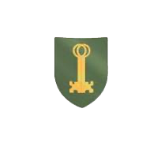
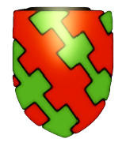
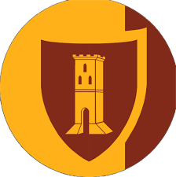

<!DOCTYPE html>
<html>
    <head>
        <meta charset="UTF-8">
        <meta name="viewport" content="width=device-width, initial-scale=1.0">
        <title>Portal</title>
        <link rel="shortcut icon" href="/assets/favicon.ico" type="image/x-icon">
        <script src="https://aframe.io/releases/1.2.0/aframe.min.js"></script>
        <script src="https://unpkg.com/aframe-image-portal@latest"></script>

        <!-- This script is to access the camera device -->
        <!-- <script src="https://cdn.jsdelivr.net/npm/ar.js/aframe/build/aframe-ar.js"></script> -->

        <!-- This script is to use the webcam inside the portal -->
        <!-- <script src="scripts/camera-portal.js"></script> -->
        
    </head>

    <body style="margin: 0; overflow: hidden;">
        <a-scene>
            <a-assets>
                <a-asset-item id="portal" src="./assets/glb/image-portal.glb"></a-asset-item>
                <!-- 
                
                
                
                 -->

            </a-assets>

            
            <!-- the sky is set before everything so the entity doesn't have the white sphere surface -->
            <a-sky color="orange"></a-sky>
           
            <!-- to access the camera device use this -->
            <!-- <a-plane embedded arjs="sourceType: webcam;" scale="0 0 0"></a-plane> -->
            
            <a-camera position="0 1.75 1">
                <a-cursor></a-cursor>
            </a-camera>
                
            <!-- everything after the entity is affected by autoReparent: true -->
            <!-- Add camera-sky to image-portal to let che camera works inside the portal -->
            <a-entity image-portal="src: #portal; autoReparent: true" position="0 1.75 -10">
            </a-entity>
            <a-entity visible="true">
                <a-box color="blue" depth="10" height="0.1" width="10" position="0 0 -10"></a-box>
                <a-box color="blue" depth="10" height="4" width="0.1" position="-4.95 2 -10"></a-box>
                <a-box color="blue" depth="10" height="4" width="0.1" position="4.95 2 -10"></a-box>
                <a-box color="blue" depth="0.1" height="4" width="10" position="0 2 -14.95"></a-box>
                <a-box color="blue" depth="0.1" height="4" width="4" position="-3 2 -5"></a-box>
                <a-box color="red" depth="2" height="0.1" width="1" position="0 1.20 -4"></a-box>
                <a-box color="red" depth="2" height="0.1" width="1" position="0 2.30 -4"></a-box>
                <a-box color="red" depth="2" height="0.1" width="1" position="0 1.20 -4"></a-box>
            </a-entity>
            <!-- Piano della sfera -->
            <!-- <a-plane height="1.6" width="1.6" rotation="-90 0 0" color="DarkGoldenRod" position="0 -1 -5"></a-plane> -->
                
            <!-- <a-entity light="type: hemisphere; color: #000; intensity: 2.5" position="0 1 -4"></a-entity> -->

            <!-- Gaite, posizionate in base al logo del Mercato delle Gaite -->

        
        </a-scene>

    </body>
</html>